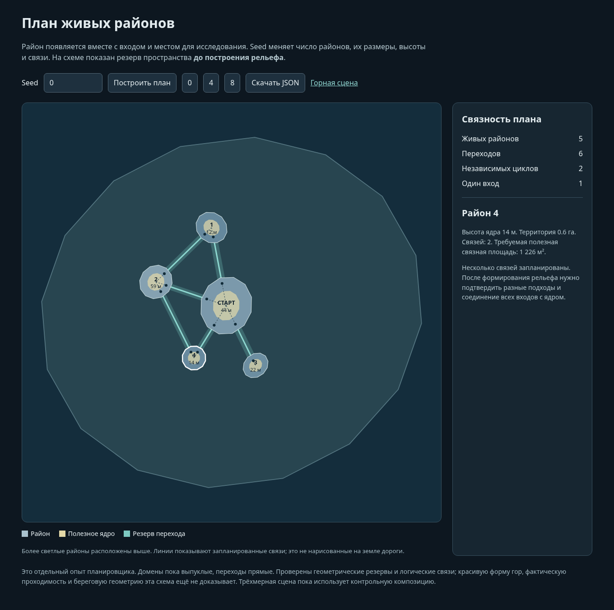
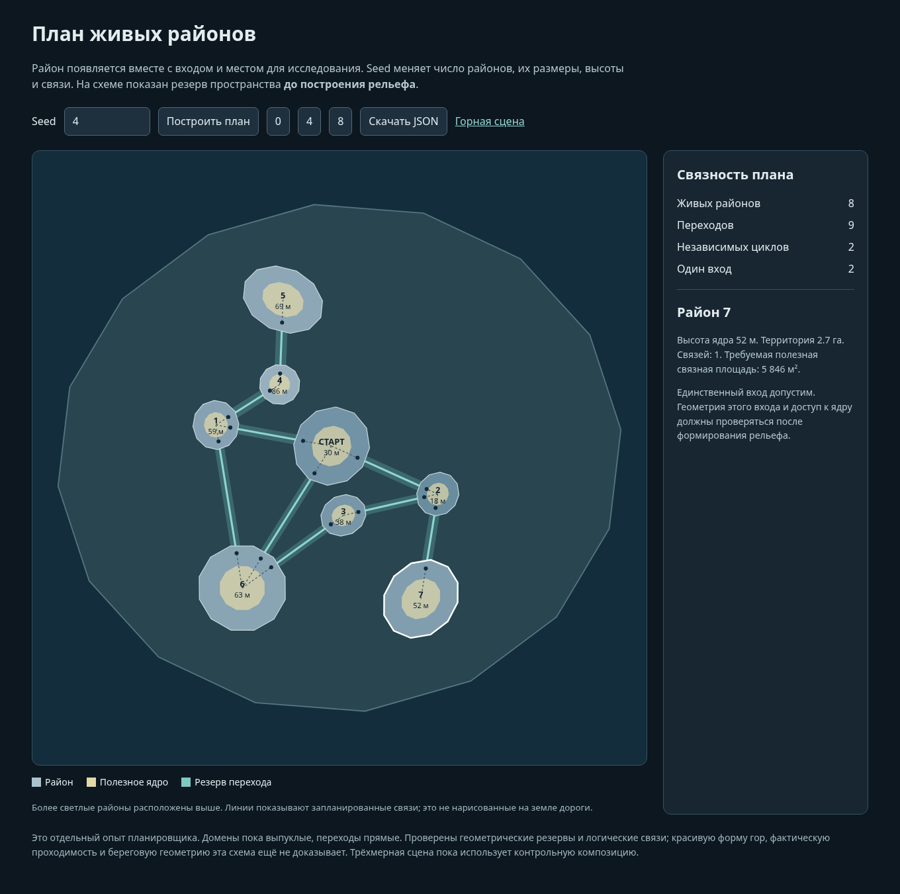
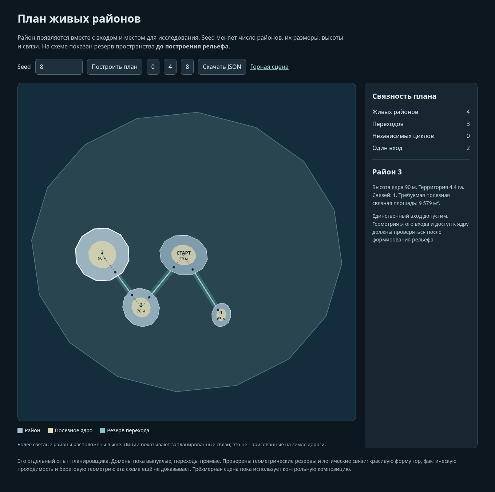
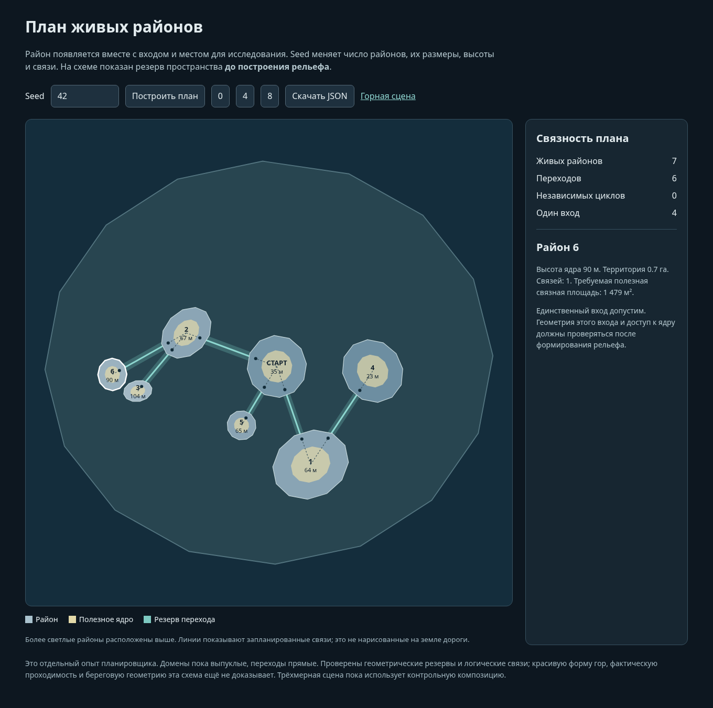

Горные районы: форма и связность
Кадры из работающей трёхмерной сцены. Сохранены скалы Клода. Верхние районы соединены пешими маршрутами; последовательность ниже показывает подход, раскрытие и вид после подъёма.
Рабочая версия. Повторяемость скальных стен и местами крепостные очертания ещё требуют изменения формы. Соответствие художественному уровню The Long Dark не заявляется.
Исходный код 6ecf6a9867714e4ef6256ff754be604ad14347b0. Кадры получены Chromium ANGLE SwiftShader; это не измерение производительности устройства. Общий Chrome этой среды не создаёт WebGL-контекст, поэтому здесь доступны сохранённые кадры и интерактивная схема плана.Размыкание верхнего подъёма: одинаковые камеры
Подъём и раскрытие
Форма и планы
Другие условия
Отдельный план до рельефа
Новый планировщик меняет число и структуру живых районов. Эти схемы ещё не исполняются 3D-генератором выше: они показывают контракты пространства, а не готовые горы.

План seed0
План seed4
План seed8
План seed42